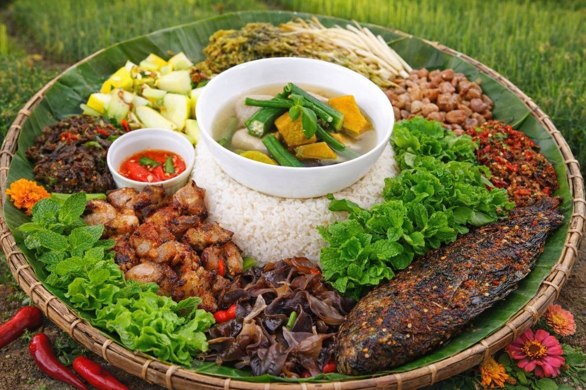

ကချင်စကောထမင်း
၁။ အသားနှင့် အရွက်များ ပြင်ဆင်ခြင်း
ဦးစွာ ဂျင်းနှင့် ကြက်သွန်ဖြူကို ထောင်းထားပါ။
အိုးတစ်ခုထဲတွင် ဆီအနည်းငယ်ထည့်ပြီး ထောင်းထားသော ဂျင်း၊ ကြက်သွန်ဖြူနှင့် ငရုတ်သီးမှုန့်တိုကို ဆီသတ်ပါ။
ပြီးနောက် အသားကိုထည့်ပြီး အသားထဲမှ ရေခန်းသည်အထိ လုံးပေးပါ။
အသားနူးသွားစေရန် ရေအနည်းငယ်ထည့်ပြီး တည်ထားပါ။ အသားနူးခါနီးတွင် မျှစ်နှင့် အခြားအသီးအရွက်များကို ထည့်လုံးပါ။
၂။
ဆန်ကို ဆေးကြောပြီး ပုံမှန်ထက် ရေအနည်းငယ်လျှော့၍ တည်ပါ။ (ထမင်းသား အနည်းငယ် မာမာလေးဖြစ်မှ နယ်ရသည်မှာ ကောင်းပါသည်)။
၃။
ထမင်းကျက်ပြီဆိုလျှင် ချက်ထားသော အသားဟင်းအနှစ်များ၊ ငရုတ်သီးစိမ်းထောင်း၊ ဖက်ဖယ်ပင်၊ နံနံပင်တိုနှင့် ရောနယ်ပါ။
အရသာအတွက် ဆားနှင့် ကြက်သားမှုန့်ကို လိုသလို ချိန်ညှိထည့်ပါ။
၄။
ကချင်ရိုးရာအတိုင်း စကောထဲတွင် ဖက်ရွက်ခင်းပြီး တည်ခင်းပါ။
ဘေးမှ ငါးပိထောင်း၊ ဟင်းချိုပူပူလေးနှင့် အသားကင်တိုဖြင့် တွဲဖက်စားသုံးနိုင်ပါသည်။
ဂျင်းနဲ့ ငရုတ်ကောင်း ပါဝင်မှုကြောင့် အစာကြေစေပြီး ကိုယ်ခံအားကို ကောင်းမွန်စေပါတယ်။
• ထမင်း: ဆန်ညှင်းထမင်း (သိုမဟုတ်) ဆန်ဖြူ/ဆန်ကြမ်း
• အသားဟင်း: ကချင်ရိုးရာချက်နည်းဖြင့် ချက်ထားသော ကြက်သား၊ ဝက်သား (သို) ငါး
• အရွက်/ဟင်းသီးဟင်းရွက်: ပြုတ်ရည်၊ တောက်တောက်စဉ်းထားသော ဟင်းရွက်များ၊ ငရုတ်သီးစိမ်း
• အစပ်နှင့် အရသာ: ကချင်ငါးပိထောင်း၊ ကချင်အချဉ်ပေါင်း (ခရမ်းချဉ်သီး/ရွက်)
• အပြင်အဆင်: ဖက်ရွက် (ဖက်ဖရု) ကို စကောထဲတွင် ခင်း၍ ဟင်းများကို စုံလင်စွာစုစည်းထားခြင်း